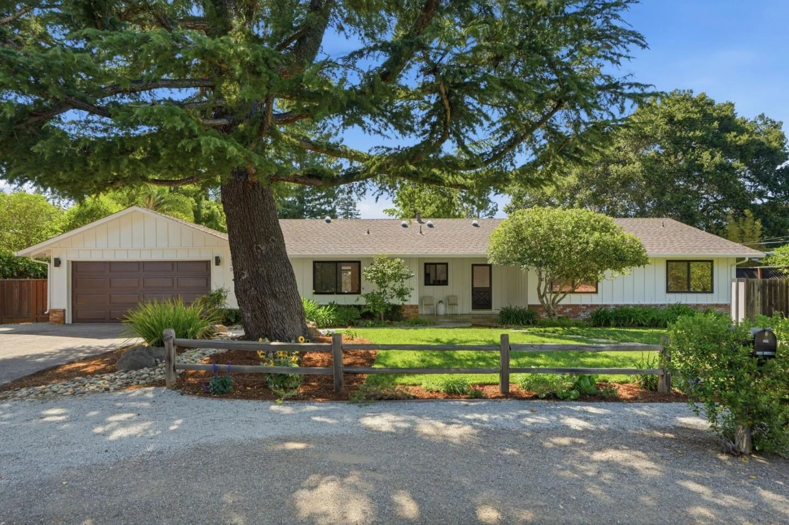
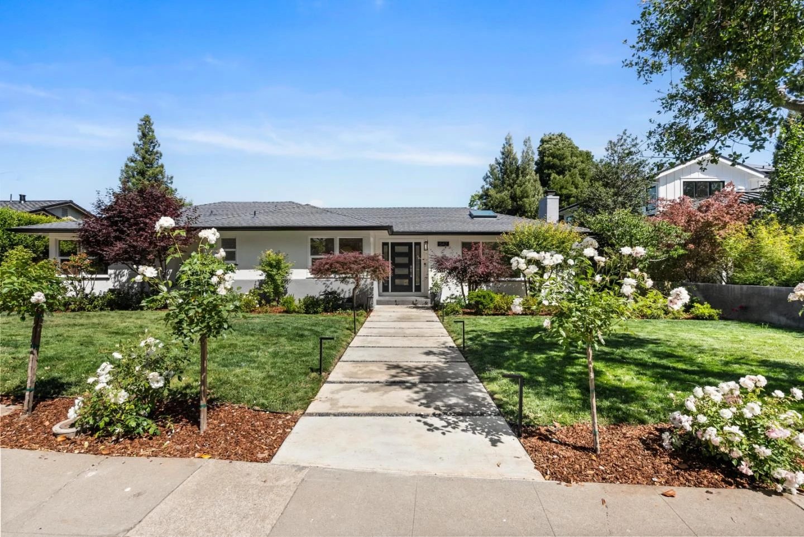

Concentrate / 专注
聚焦斯坦福周边高端住宅与半岛生活圈。以本地信息和数据分析，梳理每次交易的关键取舍，让预算与行动围绕你的目标展开。
 CiCi WangCONCENTRATE & CARE
CiCi WangCONCENTRATE & CARECICI WANG · PENINSULA REAL ESTATE
47笔近期成交用心服务每一个家。
让每一次交易、每一分投入，都创造更大的价值。
专注斯坦福周边高端住宅，陪伴 AI 从业家庭。


FEATURED TRANSACTION / LOS ALTOS
01 / A PORTFOLIO OF TRUST
从 Los Altos、Palo Alto 到 Peninsula，
用真实房屋、真实记录，讲述每一次选择。
浏览全部 47 笔成交与照片 ↗

HILLSBOROUGH / SELECTED TRANSACTION
SELECTED HOMES / 精选成交
完整成交作品集 ↗ SOLD · 已成交
SOLD · 已成交Los Altos, CA 94022
4 Beds · 5.5 Baths · 4,882 Sq Ft
成交于 Nov 27, 2024
SOLD · 已成交Los Altos, CA 94024
4 Beds · 3.5 Baths · 2,862 Sq Ft
成交于 Oct 16, 2026

SOLD · 已成交Los Altos, CA 94022
5 Beds · 3 Baths · 2,082 Sq Ft
成交于 Jun 10, 2026
 SOLD · 已成交
SOLD · 已成交Palo Alto, CA 94301
4 Beds · 3.5 Baths · 2,454 Sq Ft
成交于 Jun 9, 2025
 SOLD · 已成交
SOLD · 已成交Los Altos, CA 94022
3 Beds · 2 Baths · 1,955 Sq Ft
成交于 Jul 15, 2025

SOLD · 已成交Palo Alto, CA 94303
4 Beds · 3 Baths · 1,978 Sq Ft
成交于 Jul 15, 2024
 SOLD · 已成交
SOLD · 已成交Los Altos Hills, CA 94022
5 Beds · 3 Baths · 2,567 Sq Ft
成交于 Nov 27, 2024
47 为 MLSListings 经纪人主页的 Recent Transactions 栏目数量，核实于 2026.11.17；并非终身成交总数或全部卖方代理。以上为其中精选案例。
02 / THE TWO C’S
用心服务每一个家，
让每一次交易、每一分投入，
都创造更大的价值。
把客户的预算、时间和目标认真放在心上。用专业判断梳理投入的优先级，用细致执行把计划落实到位，争取事半功倍的效果，让每一步准备都围绕你的价值展开。
聚焦斯坦福周边高端住宅与半岛生活圈。以本地信息和数据分析，梳理每次交易的关键取舍，让预算与行动围绕你的目标展开。
用心服务每一个家，把你的每一分投入当回事。从买卖房屋到教育、职业与安家生活，认真倾听需求，也愿意陪你聊创业与下一步计划。
让价值落实在细节里：清晰沟通、合理安排准备预算、协调执行与持续跟进。每一次委托，都以你的目标作为工作的出发点。
03 / A HOME WITHIN A LIFE
一起整理学校与社区资源，把家庭成长放进居住选择；具体入学资格由学区确认。
理解 AI 行业的工作节奏，讨论通勤、远程办公和职业变化下的住房安排。
从看房到入住，关注维护、空间使用与日常便利，让生活慢慢安定下来。
愿意听你聊创业与人生计划，交流想法、梳理需求，专业事项可寻求相应顾问协助。
PALO ALTO / A LIFE WELL CONSIDERED
04 / FROM PREPARATION TO PRESENTATION
先明确目标，再决定投入。让 design、staging、home care 与 marketing 各有重点，相互配合。服务范围、供应商与费用在委托前确认。
梳理空间、色彩与更新优先级，让预算围绕房屋优势与销售目标展开。
讨论适合房屋的布置方案，让买家更容易理解空间、采光与生活方式。
整理维护与修缮事项，协调准备进度，专业工程由相应服务人员评估。
规划摄影、房源页面、开放日与数字传播，以准确、完整的内容呈现房子。
CICI WANG · COLDWELL BANKER REALTY
05 / MEET CICI
从生物科学博士到房产经纪人，Cici 将研究训练中的细致与数据思维带进每次房产决策。2016 年选择进入地产行业，她希望成为自己当年买房时想遇到的那位经纪人：愿意倾听，也认真理解一个家庭的生活。
MLSListings 主页收录 47 笔近期成交；Coldwell Banker 官方介绍记载其累计成交金额超过 $100M。
服务关注 Los Altos、Mountain View、Palo Alto 与 Peninsula。普通话与英语沟通。Coldwell Banker Realty · CalRE #02039658。
06 / C-LOG
Cici 的品牌内容专栏。首批为网站编辑示范文章，待 Cici 审阅后署名发布。
YOUR LOCAL HOME VALUE
从一个地址开始，讨论真实可比成交、房屋状况与适合你的下一步。